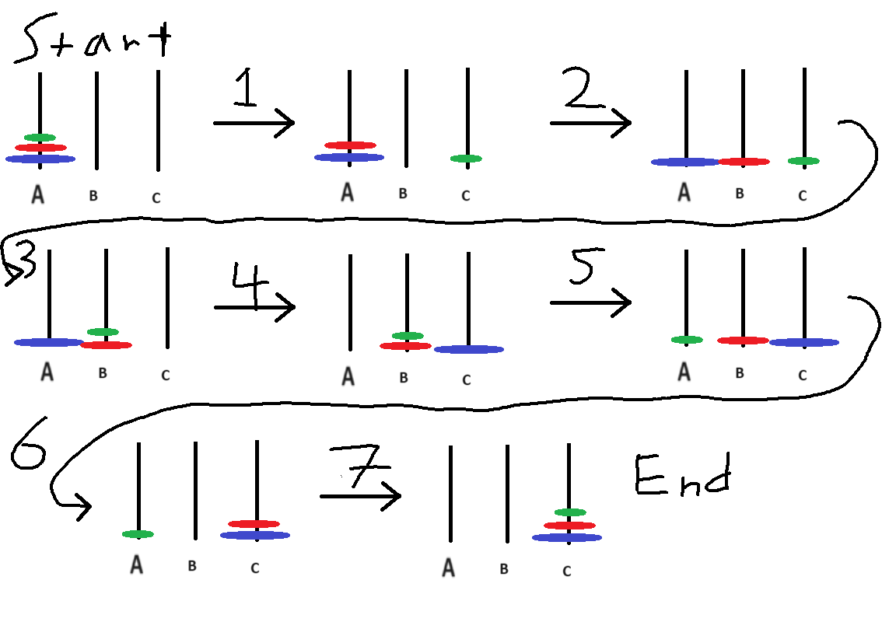

def tower_of_hanoi(n, starting_rod, middle_rod, ending_rod): # specify the starting rods you want
if n == 1: # Base case, 1 disk on the rod, you can just move it to any open rod
print(f"Disk {n}: {starting_rod} -> {ending_rod}") # show that we moved it
else: # recursive cases
tower_of_hanoi(n-1, starting_rod, ending_rod, middle_rod) # move the n-1 disks to the middle rod from starting rod
print(f"Disk {n}: {starting_rod} -> {ending_rod}") # display the move
tower_of_hanoi(n-1, middle_rod, starting_rod, ending_rod) # move the n-1 disks from the middle rod to the ending rodCS240 Midterm
These are my written solutions to the problems on the midterm. There will be a link to the attached python script for each problem (on Github). I will be presenting some code and outputs, but for the spell checker I will provide a link to the python script and my thoughts and approaches to including each requirement of the spell checker. You can view the work that I did via following Pull requests which shows all the commits that I have made on this assignment. Additionally I have included a scratchwork python script which contains my thoughts and kind of shows my working process.
Hanoi’s Tower
The Tower of Hanoi problem involves three rods and a number of disks of different sizes which can slide onto any rod. The puzzle starts with the disks stacked in ascending order of size on one rod, the smallest at the top, making a cone.
The goal of the puzzle is to move the entire stack to another rod, obeying the following rules:
- Only one disk can be moved at a time
- Each move consists of taking the upper disk from one of the stacks and placing it on top of another stack or on an empty rod.
- No disk may be placed on top of a smaller disk.
The following resources were used to help me come up with a solution to the problems below:
- YouTube video by Reducible was incredibly helpful for my understanding of how the algorithm works and how the recursion for this problem functions. From about 16 minutes until 20 minutes there is en elegent animation which describes the recursion taking place in the algorithm.
- YouTube video by Numberphile Was helpful for understanding the math behind the algorithm and to help me identify the pattern going on with moving disks which was helpful for my iterative approach. There was a harmonic version of the algorithm which helped ingrain the pattern in my mind.
- Youtube video by 3blue1brown Showed a solution to the problem using binary counting to solve the problem. This was very helpful for my iterative apprach, even though I did not use binary counting in my approach to solving the problem. Was also helpful for my reasoning on the recursive version. Once the recursion was explained in a “from the perspective of the bottom disk” manner everything pretty much clicked for me.
- Wikipedia is always a helpful resource when it comes to learning about what the Tower of Hanoi problem is.
1. Implement a solution for the Tower of Hanoi problem using recursion. Your solution should move the disks from the starting peg to the target peg using the auxiliary peg.
Below is a diagram which shows a solution for the Tower of Hanoi problem when there are \(3\) rods and \(n=3\) disks:

We first start with all three disks stacked on Rod \(A\). Then procede with the following steps to end with all three disk stacked on rod \(C\):
- Move the Green disk from rod \(A\) to rod \(C\).
- Move the Red disk from rod \(A\) to rod \(B\).
- Move the Green disk from rod \(C\) to rod \(B\).
- Move the Blue disk from rod \(A\) to rod \(C\).
- Move the Green disk from rod \(B\) to rod \(A\).
- Move the Red disk from rod \(B\) to rod \(C\).
- Move the Green disk from rod \(A\) to rod \(C\).
These steps will move the stack of three disks from rod \(A\) to rod \(C\) while following the established rules. We can break down the process a little more to understand what is going on and then build a recursive function from it. This solution to the Tower of Hanoi problem took \(7 = 2^3 -1\) steps to solve.
Steps \(1\) through \(3\) involve us moving the Green and Red disks from rod \(A\) to rod \(B\) using the auxilary rod \(C\) to store the Green disk while we move the larger of the two disks to the middle rod. These steps involve moving the Green disk to rod \(C\) then moving it from \(C\) to rod \(B\) once the larger disk is in place.
In step \(4\) we are simply moving the Blue disk from rod \(A\) to rod \(C\).
Now in steps \(5\) through \(7\) we are simply doing what we did in steps \(1\) through \(3\), but instead of using rod \(C\) as the auxillary rod, we are using rod \(A\) as the auxillary rod to move the Green and Red disks from rod \(B\) to rod \(C\).
Thinking recursively, step \(4\) would represent our base case. We are simply moving a disk from one rod to another rod after we have removed all the rods that were on top of it.
The steps are as follows if we had \(n=1\) disk or \(n=2\) disks:
If we only had \(n=1\) disk (i.e. only the Blue disk), this would take \(1\) step to solve, move the Blue disk to rod \(C\) from rod \(A\).
If \(n=2\) (i.e. only the Red and Blue disks), the steps would be as follows
- Move the Red disk from rod \(A\) to rod \(B\).
- Move the Blue disk from rod \(A\) to rod \(C\).
- Move the Red disk from rod \(B\) to rod \(C\)
Note that the base case (Move the Blue disk from rod \(A\) to rod \(C\)) always shows up in each of these scenarios.
Formulating an Algorithm
A good way to approach formulating an algorithm for this problem is look at things from the perspective of the disk that is on the bottom of a stack of disks (in the above diagram it is the Blue disk). In order for that disk to move, we must first move the stack of disks that are on top of it from one rod to another rod.
Lets use the example of a \(3\) disk variation of the problem. If we have a \(3\) disk stack, to move the bottom disk, we have to move the top \(2\) disks off of it. We can only move one disk at a time however, so to remove the stack of \(2\) disks from the third disk, we have to move the singular disk first.
Once we have moved the singular disk, we can now go back to the starting stack of disks where we now have a stack of \(2\) disks. From here we repeat the process, we have a stack of \(2\) disks, to move the bottom disk, we have to move the singular disk above it.
Now there is only one valid rod for the top disk to go to, so we move it to that rod. Returning to the starting rod, there are no valid spots for us to move the disk to, since the remaing disk on the starting rod is assumed to be the biggest rod.
We can now look at the middle rod, from here, the only valid move is to move the disk back to the starting rod, but if we did that, we would have just undone the previous step. So let’s instead go to the last rod.
Our goal right now is to move the disk on the starting rod to an open rod. The only way to do this is to move the smallest disk, which is currently on the ending rod (if we moved the middle size disk we would have to put it on top of the largest disk). So we now have to move the disk that is on the ending rod onto the middle rod to open up space for our largest disk to be moved onto an open rod.
We now find ourselves in a familiar situation, we have a stack of \(2\) disks, an open rod, and a rod that we want to move the stack of \(2\) disks onto, which in this case is the rod containing the largest disk. From here since we have moved a stack of \(2\) disks before, we move it again following the same process, just using different rods that we did before.
We already figured out what our base case is, moving a single disk from one rod to another available rod (a rod that is either empty or only has disks larger than the disk we are trying to move).
Next we need to think of the recursive step, which in this case is moving the \(n-1=3-1=2\) remaining disks to another rod, using an auxilary rod.
This idea holds for \(n\) rods. We would basically be breaking the problem down into smaller versions of this three disk version of the problem.
We can simplify all of the above to formulate an algorithm to solve this problem:
- Move \(n-1\) disks from rod \(A\) to rod \(B\). This uses rod \(C\) as a “helper” rod.
- Move the remaining disk from rod \(A\) to rod \(C\).
- Move the \(n-1\) disks from rod \(B\) to rod \(C\). This uses rod \(A\) as a “helper” rod.
Code implementation of the algorithm
Now lets try to implment this aproach to solving the problem using pseudocode:
def hanoistower(n, starting_rod = A, ending_rod = C, auxillary_rod = B)
# base case only 1 disk to move
if n == 1:
move disk from starting rod to ending rod
else:
# recursively call the function to move the n-1 disks to the middle( auxilary) rod
hanoistower(n-1, starting_rod = A, ending_rod = B, auxilary_rod = C)
#some function to show the moving of the disks
movedisk(start_rod, end_rod)
# recursively call again to move the n-1 disks from the auxillary( middle) rod to the end rod
hanoistower(n-1, starting_rod = B, ending_rod = C, auxilary_rod = A)Basically each time we recursively call the funciton, we are changing which rods we are moving the disks to so that when we eventually reach the base case, we are able to move the disk to the correct rod.
Now we can implement this funciton in python:
We can demonstrate this as follows:
tower_of_hanoi(2,"A","B","C")Disk 1: A -> B
Disk 2: A -> C
Disk 1: B -> Ctower_of_hanoi(3,"A","B","C")Disk 1: A -> C
Disk 2: A -> B
Disk 1: C -> B
Disk 3: A -> C
Disk 1: B -> A
Disk 2: B -> C
Disk 1: A -> Ctower_of_hanoi(4,"A","B","C")Disk 1: A -> B
Disk 2: A -> C
Disk 1: B -> C
Disk 3: A -> B
Disk 1: C -> A
Disk 2: C -> B
Disk 1: A -> B
Disk 4: A -> C
Disk 1: B -> C
Disk 2: B -> A
Disk 1: C -> A
Disk 3: B -> C
Disk 1: A -> B
Disk 2: A -> C
Disk 1: B -> CI tried to go a bit further with this approach and implement a solution to the problem that uses stacks to store the state of the three rods, and then pops and pushes the disks to shift them between rods. This works somewhat as in it ends in the correct state, but there are some instances where the intermediate steps are either displayed wrong or in a manner that is hard to understand. That is why I have included both of the implementations of this.
# function to move the top value of stack 1 to the top of stack 2
def moveStack(stack1 = stack(), stack2 = stack()):
temp = stack1.pop()
stack2.push(temp)
# tower of of hanoi recursive solution that works on the stacks
def tower_of_hanoi_stacks(n, starting_rod, middle_rod, ending_rod): # specify the starting rods you want
if n == 1: # Base case
moveStack(starting_rod, ending_rod)
print(f"AFTER\nStarting Rod:\n{starting_rod}\nAuxilary Rod:\n{middle_rod}\nEnding Rod:\n{ending_rod}\
\n Moved disk {n}")
else: # if we are not on the last rod
tower_of_hanoi_stacks(n-1, starting_rod, ending_rod, middle_rod) # recursive call to move the n-1 disks to the middle rod using the ending rod as the axullary rod
moveStack(starting_rod, ending_rod) # move the current disk
print(f"AFTER\nStarting Rod:\n{starting_rod}\nAuxilary Rod:\n{middle_rod}\nEnding Rod:\n{ending_rod}\
\n Moved disk {n}")
tower_of_hanoi_stacks(n-1, middle_rod, starting_rod, ending_rod) # move the remaining n-1 disks to the ending rod using the starting rod as the auxillary rod
# going to need to call the above:
def TowerOfHanoi(n):# Tower of Hanoi with stacks and it will initialize the number of disks
# n = number of disks
## initialize the starting, auxillary, and ending rods
starting_rod = stack()
auxillary_rod = stack()
ending_rod = stack()
# fill the starting rod
for i in range(n,0,-1):
starting_rod.push(i)
# display starting state
print("Start:")
print(f"Starting Rod:\n{starting_rod}\nAuxillary Rod:\n{auxillary_rod}\nEnding Rod:\n{ending_rod}")
# now we can call the tower of hanoi function. It will print its final state
tower_of_hanoi_stacks(n, starting_rod, auxillary_rod, ending_rod)The output of the TowerofHanoi() function is as follows, I will be calling it on \(n=2\) to save space:
TowerOfHanoi(2)Start:
Starting Rod:
[2, 1]
Auxillary Rod:
[]
Ending Rod:
[]
AFTER
Starting Rod:
[2]
Auxilary Rod:
[]
Ending Rod:
[1]
Moved disk 1
AFTER
Starting Rod:
[]
Auxilary Rod:
[1]
Ending Rod:
[2]
Moved disk 2
AFTER
Starting Rod:
[]
Auxilary Rod:
[]
Ending Rod:
[2, 1]
Moved disk 12. Implement a solution for the Tower of Hanoi problem using an iterative approach.
To implement a solution for the Tower of Hanoir problem using an iterative approach, I will try to build upon my recursive approach. I plan to implement this solution using stacks to represent rods. I will represent disk sizes using an integer to represent the disk’s radius. The smallest disk will always be labeled \(1\) and the largest disk will always be labeled \(n\).
Lets begin by analysing the pattern of the solutions generated by our recursive function. We know that the number of steps required to solve the problem is given by \(2^n-1\). We can use the number of steps required to solve the puzzle as our iterator.
tower_of_hanoi(3, 'S','A','E')
'''
Output:
Step 1: Disk 1: S -> E
Step 2: Disk 2: S -> A
Step 3: Disk 1: E -> A
Step 4: Disk 3: S -> E
Step 5: Disk 1: A -> S
Step 6: Disk 2: A -> E
Step 7: Disk 1: S -> E
'''tower_of_hanoi(4,"S","A","E")
'''
Output:
Step 1: Disk 1: S -> A
Step 2: Disk 2: S -> E
Step 3: Disk 1: A -> E
Step 4: Disk 3: S -> A
Step 5: Disk 1: E -> S
Step 6: Disk 2: E -> A
Step 7: Disk 1: S -> A
Step 8: Disk 4: S -> E
Step 9: Disk 1: A -> E
Step 10: Disk 2: A -> S
Step 11: Disk 1: E -> S
Step 12: Disk 3: A -> E
Step 13: Disk 1: S -> A
Step 14: Disk 2: S -> E
Step 15: Disk 1: A -> E
'''Ignoring the actual number of the disk that is being moved, lets see if there is a pattern between what rods we are moving disks to and from. When \(n\) is odd, the example where \(n=3\), we can break down the movements of the disks as such.
In steps \(1\), \(4\) and \(7\), we are moving a disk from the starting rod to the ending rod.
In steps \(2\) and \(5\) we are moving a disk between the starting rod and the auxilary rod, swaping which direction we move the disks. In step \(2\) we move the disk from the starting rod to the auxilary rod, and in step \(5\) we move a disk from the auxillary rod to the starting rod.
In steps \(3\) and \(6\) we are moving a disk between the auxillary rod and the ending rod. In step \(3\) we are moving a disk from the top of the ending rod to the top of the auxilary rod. In step \(5\) we are doing the opposite moving a disk from the top of the auxillary rod to the top of ending rod.
Lets analyze the case where \(n=4\). In this case \(n\) is even.
In Steps \(1\), \(4\), \(7\), \(10\), and \(13\) we are moving disks between the beginning rod and the auxillary rod. In all of these steps besides step \(10\) we are moving the disks from the beginning rod to the auxillary rod, in step \(10\) we do the opposite.
In steps \(2\), \(5\), \(8\), \(11\), and \(14\) we are moving disks between the beginning rod and the ending rod in alternating fashion starting with moving disks from the beginning rod to the ending rod.
In steps \(3\), \(6\), \(9\), \(12\), and \(15\) we are moving disks between the auxillary rod and the ending rod. For all of the steps except for step \(6\) we are moving a disk from the auxillary rod to the ending rod, in step \(6\) we do the opposite.
Lets return to the example of \(n=3\). We can notice some equivalency classes beginning to form, notably of form \(a \mod 3\):
\(\{1,4,7\} \mod 3 = [1]\)
\(\{2,5\} \mod 3 = [2]\)
\(\{3,6\} \mod 3 = [0]\)
When \(n=4\), we can expand upon these equivalency classes as such:
\(\{1,4,7,10,13\} \mod 3 = [1]\)
\(\{2,5,8,11,14\} \mod 3 = [2]\)
\(\{3,6,9,12,15\} \mod 3 = [0]\)
This provides us with a clear pattern for what we must do to implement a solution to the Tower of Hanoi problem iteratively. The big difference in the pattern is where we start to move the first disk which is dependent on if \(n\) is odd or even. If \(n\) is odd, we move the first disk to the ending rod, if \(n\) is even, we move the first disk to the auxillary rod.
We can dive deeper as well into the steps by looking at the value of the disks as we move them. Lets start with the case where \(n = 3\).
Steps \(1\), \(4\) and \(7\)
- The value of the disk does not matter, always moving in the same direction.
Steps \(2\) and \(5\)
- In step \(2\), disk \(2\) gets moved from start rod to auxillary rod (to the right). Auxillary rod is empty and \(2\) is greater than \(1\) (disk \(1\) is on the ending rod) so we have to move it to the auxillary rod. That is the only valid move
- In step \(5\), disk \(1\) gets moved from auxillary rod to start rod (to the left).
Steps \(3\) and \(6\)
- In step \(3\), disk \(1\) gets moved from end rod to auxillary rod (to the left).
- In step \(6\), disk \(2\) gets moved from the auxillary rod to the end rod (to the right).
Notice that in the above, when step#\(\mod 3 \neq 1\), if we are moving an odd disk, we move it to the left. If we are moving an even disk, we move it to the right.
Now lets look at the case when \(n=4\):
Steps \(1\), \(4\), \(7\), \(10\), and \(13\)
- We move disk \(1\) on steps \(1,7\) and \(13\). Each time we move disk \(1\) to the right.
- We move disk \(2\) to the left on step \(10\).
- we move disk \(3\) to the right on step \(4\).
Steps \(2\), \(5\), \(8\), \(11\), and \(14\)
- We move disk \(1\) on steps \(5\) and \(11\). Both times we move disk \(1\) to the left.
- We move disk \(2\) on steps \(2\) and \(14\). Both times we move disk \(2\) to the right.
- We move disk \(4\) to the right on step \(8\).
Steps \(3\), \(6\), \(9\), \(12\), and \(15\)
- We move disk \(1\) on steps \(3\), \(9\), and \(15\). Each time we move disk \(1\) to the left.
- We move disk \(2\) on step \(6\). We move disk \(2\) to the right.
- We move disk \(3\) on step \(12\). We move disk \(3\) to the left.
Now a real pattern starts to emerge. The equivalency classes created by the step numbers corresponds to which rods we are moving disks between, while the even/oddness of the disk tells us what direction we are moving the disks between. The directions are switched depending on whether \(n\) is even or odd. From the Numberphile video, they introduce a remarkable observation. They use different colored prisms as their disks, where the color alternates between disks, this is just like my setup, where I have disks labeled by their radius instead of by color. The observation that they introduce is that in an optimal solution to the problem, we should never have two disks of the same color stacked on top of each other. We can translate this to my setup, this would correspond to the evenness and oddness of a disk. An odd disk should never be stacked on top of another odd disk and the same for an even disk. Our stacks of disks on each rod should follow the pattern odd, even, odd, even, \(\ldots\). We can use this pattern to figure out what valid move we can make between the two rods that we want to move disks between.
We can use the number of steps required to solve the problem as our iterator.
Next we should first check if \(n\) is even or odd and assign the first steps as such.
Code Implementation
Lets try to implement the above in pseudocode:
going to need to modify my stackMove function to compare the values of things at the top of stacks, this will tell us what move we can make (valid moves), then moves them between rods accordingly. checking the eveness of the disk seems like it would take a lot more work than I can accomplish during this time but might try to pursue this idea further.
function hanoitoweriterative(n,starting rod, auxillary rod, end rod):
create stacks for each rod
fill in the first rod with values 1 through n, with n on the bottom
add some labels for the rods s,a,e = (Start, Auxilary, End)
if number of disks are even:
swap the end pole and the auxilary pole
for i in range (1, 2**n -1): # itll take 2^n -1 steps to solve the problem, iterate over this range.
EQUIVALENCY CLASSES WE DEFINED
if (i % 3 == 1):
check even/odd of disk
if value of disk % 2 ! = 0
move between start and end rod, going left (auxillary if n is even, direction opposite)
else:
go in the other direction between the same rods as you just did
elif (i % 3 == 2):
check even/odd of disk
if value of disk % 2 ! = 0
move between start and auxillary rod, going left (end if n is even, direction direction opposite)
else:
go in the other direction between the same rods as you just did
elif (i % 3 == 0):
check even/odd of disk
if value of disk % 2 ! = 0
move between auxillary and end rod, going left (if n is even, direction direction opposite)
else:
go in the other direction between the same rods as you just didNow lets implement this in python:
I tried to follow my pseudocode as best as possible, but ran into a wall trying to come up with a way of checking the even/oddness of the disk that we are trying to move. I decided to opt for a similar approach to the one found here, which utilizes a function that determines what valid move you can make between two disks to simplify the function. To do this I modified my moveStack() function that I used in my stack representation of the recursive solution.
# Function to move disks between rods. Determines the valid move between the start and end rod, and then executes that move
def moveDisk(start, end, s , e): # start and end are both stacks, s and e are labels for the stacks
# get the top value of each stack
topstart = start.pop()
topend = end.pop()
# compare values to determine valid movements
# if start is empty
if topstart == None: # if start rod is empty
start.push(topend) # move the disk on the end rod to the start rod (only valid move)
print(f"Disk {topend}: {e} -> {s}") # display the move
# if end is empty
elif topend == None: # if the end rod is empty
end.push(topstart) # move disk on start rod to end rod (only valid move)
print(f"Disk {topstart}: {s} -> {e}") # dispaly the move
# compare the values and move them accordingly, figure out which disk is the larger of the two
elif topstart > topend: # disk on top of starting rod is bigger than disk on ending rod
# move disk on end rod to start rod ( only valid move between the two rods)
start.push(topstart) # put the top value of start back onto the rod
start.push(topend) # put the top value of end on top of the start rod
print(f"Disk {topend}: {e} -> {s}") # display the move
else: #disk on top of starting rod is smaller than the disk on the ending rod
# move the disk on the start rod to the end rod ( only valid move between the two rods)
end.push(topend) # put the top value of end back onto the end rod
end.push(topstart) # put the top value of start on top of the end rod
print(f"Disk {topstart}: {s} -> {e}") # display the move
def tower_of_hanoi_it(n, starting=str, auxillary=str, ending=str): # n is number of rods, starting, auxillary, and ending strings are the lables for each of the rod.
# initialize stacks
start = stack(n)
aux = stack(n)
end = stack(n)
# fill in starting stack (rod)
for i in range(n,0,-1):
start.push(i)
#labels for printing
s, a, e = starting, auxillary, ending
# check if n is even or odd, have to change some things if that is the case
if (n % 2 == 0):
# swap auxilary and end rods, the first step that will be made ( so we are moving disks between the correct rods)
temp = e
e = a
a = temp
#iterate through the moves required to solve the problem (1 to 2^n - 1)
for i in range(1,int(2**n)): # range 1 to 2^n-1, but because of how python's range function works we can just write 2^n
if (i % 3 == 1): # valid move between start and end rod (start and auxillary if n is even)
moveDisk(start, end, s, e) # function to move the rods
elif (i % 3 == 2): # valid move between start and auxillary rod (start and end if n is even)
moveDisk(start, aux, s, a) # function to move the rods
elif (i % 3 == 0): # valid move between auxillary and end rod
moveDisk(aux, end, a, e) # funciton to move the rodsDemonstrating our functions:
The outputs are a little weird because of how I handled poping an empty stack in my stack implementation.
tower_of_hanoi_it(3, "S", "A", "E")Stack is empty
Disk 1: S -> E
Stack is empty
Disk 2: S -> A
Disk 1: E -> A
Stack is empty
Disk 3: S -> E
Stack is empty
Disk 1: A -> S
Disk 2: A -> E
Disk 1: S -> Etower_of_hanoi_it(4, "S", "A", "E")Stack is empty
Disk 1: S -> A
Stack is empty
Disk 2: S -> E
Disk 1: A -> E
Stack is empty
Disk 3: S -> A
Disk 1: E -> S
Disk 2: E -> A
Disk 1: S -> A
Stack is empty
Disk 4: S -> E
Disk 1: A -> E
Stack is empty
Disk 2: A -> S
Disk 1: E -> S
Disk 3: A -> E
Stack is empty
Disk 1: S -> A
Disk 2: S -> E
Disk 1: A -> E3. Compare the time and space complexity of both the recursive and iterative solutions and explain the differences.
We can pretty much determine the time complexities of both the recursive and iterative solutions by looking at the optimal number of steps that it takes to solve the problem. We have previously shown that it will take \(2^n-1\) steps to optimally solve the Tower of Hanoi Problem.
Lets look a little deeper at the recursive solution:
If we have \(n\) disks, we have to make \(2\) recursive calls on the \(n-1\) disks and then a single operation to then move the disks between rods (this will take constant time so lets call that \(c\)). Lets label the recursive funciton and the recursive calls \(h(n)\) We can write this out as a formula, time \((h(n)) = 2\cdot time(h(n-1))+c\). Lets dive a bit deeper into how this breaks down for various \(n\):
- \(n = 0\):
- time \((h(0)) = 0\)
- \(n=1\):
- time \((h(1)) = 2\cdot time(h(0))+c = c\), since \(c\) represents constant time we can say that \(c=1\), thus time \((h(1))=1\)
- \(n =2\):
- time \((h(2)) = 2\cdot time(h(1))+c = 3c = 3\)
- \(n = 3\):
- time \((h(3)) = 2\cdot time(h(2))+c = 7c = 7\)
- \(n = 4\):
- time \((h(4)) = 2\cdot time(h(3))+c = 15c = 15\)
- \(n = 0\):
From the above pattern we can simplify, and get: time \((h(n)) = 2\cdot time(h(n-1))+c = (2^n-1)c\), where \(c=1\) thus the time complexity for our recursive version is given by \(O(2^n-1)\) which, ignoring constants simplifies to \(O(2^n)\).
For the space complexity of this algorithm, we are constantly swapping items between rods, thus we are not creating any new items to store and we can re-use the same space for each step. The space will be \(n\), which is the number of disks as we only have to store the states of the \(n\) disks as we go through the algorithm, thus the space complexity for the recursive version is \(O(n)\).
Now lets turn to the iterative version.
In the iterative version we have a few things to keep track of, the number of times that we iterate, and the operations that we execute each time we iterate through the funciton. We can also look at the operations we do before we begin the iteration piece, but in the grand scheme of things, those operations will take \(O(1)\) constant time.
So we have to look at our moveDisk() function. The moveDisk() funciton has 3 main operations which each take \(O(1)\) operations. Those are the popping of the two stacks we want to move disks between, and then the actual operation where we move the disks between the stacks. In big-Oh notation, since these tasks are all constant time, our moveDisk() function will take \(O(3)\propto O(1)\) constant time to complete.
Looking at the iteration going on in the function, we iterate through the steps of the algorithm. Since we have calculated that the optimal solution will take \(2^n-1\) steps, we iterate \(2^n-1\) times. Each time we move thorugh our for loop, we do one operation, which is moving the disks between rods depending on where we are at in the pattern. We know that our moveDisk() function takes \(O(1)\) constant time to execute, so do this \(2^n-1\) times thus the time complexity can be \(O(n)=2^n-1\), ignoring constants we get a time complexity of \(O(n)= 2^n\). Thus the time complexity for our iterative implementation is \(O(2^n)\)
Turning to the space complexity of our iterative implementation, we initialize \(3\) stacks of size \(n\). Because we are only moving disks between these \(3\) stacks, we can reuse the space that we first initialized. So we can write the space complexity as \(O(3n)\propto O(n)\)
We can summarize the above into the following table:
| Recursive | Iterative | |
|---|---|---|
| Time Complexity | \(O(2^n)\) | \(O(2^n)\) |
| Space Complexity | \(O(n)\) | \(O(n)\) |
4. (Optional, but extra credit) Create a graphical user interface (GUI) that demonstrates the steps of the Tower of Hanoi problem as the disks are moved from the starting peg to the target peg. The GUI should allow the user to specify the number of disks and the speed at which the disks move.
5. Create a variation of the Tower of Hanoi problem where the user can specify more than three pegs. Your solution should still move all the disks from the starting peg to the target peg while adhering to the rules of the Tower of Hanoi problem.
For this problem I will be making the following assumptions:
- The number of disks is fixed, I will use \(3\) disks for my implementation
- The number of pegs(rods) must be greater than or equal to 3. Else we would not be able to solve the puzzle.
- The rules of the original Tower of Hanoi must be followed, one disk at a time, disks can only be placed on empty rods or on a rod with a larger disk.
If there are only 3 rods, we will follow the same steps that we followed to get a solution using the original variation.
If there are more than 3 rods, we will find the number of auxillary rods and then use that information to determine how we move disks between rods.
If we have \(n\) disks and \(r\) rods, to move to the end rod from the start rod we will still have to move the \(n-1\) rods from the starting disk to the auxillary disks. Then move the remaining disk to the ending rod. The simplest solution I can think of to this problem would be to take my recursive approach and rename the auxilary rod input to be auxillary rods an and then each time we move a disk to the auxillary rods we don’t specify which auxillary rod we are moving it to, just state that we are moving it to some auxillary rod.
Okay, lets start by looking at the case when \(r=4\). Since we assume a fixed \(n\), there are \(3\) disks to move to the ending rod. We label the disks in descending order, \(1,2,\) and \(3\). The order of operations will be as follows:
- Move disk \(1\) to an open auxillary rod. ( 3 open rods total, 2 auxillary open)
- Move disk \(2\) to an open auxillary rod. ( 2 open rods total, 1 auxillary open)
- Move disk \(3\) to the end rod.
- Move disk \(2\) to the end rod.
- Move disk \(1\) to the end rod.
Now lets look at the case where \(r = 5\). The order of operations is as follows:
- Move disk \(1\) to an open auxillary rod. (4 open rods total, 3 auxillary open)
- Move disk \(2\) to an open auxillary rod. (3 open rods total, 2 auxillary open)
- Move disk \(3\) to the end rod.
- Move disk \(2\) to the end rod.
- Move disk \(1\) to the end rod.
With the above assumptions, this will hold for all \(r >3\)
Here is how I would implement this in python. I am going to utilize my pre-existing tower_of_hanoi() function when the number of rods is \(3\), I will throw an error if the number of rods is less than \(3\), and if the number of rods is greater than \(3\) I will print the steps above and indicate how many available auxillary disks there are.
# Tower of Hanoi more than 3 pegs, but only 3 disks
def THanoiG3R(n): # number of rods, done with three disks.
if n <3:
return f"Puzzle must have at least 3 pegs"
if n == 3:
return tower_of_hanoi(3, "Start", "Auxillary", "End")
if n > 3:
nopen = n -1
auxopen = nopen-1
print(f"Disk 1: Start -> Auxillary ({auxopen} available)")
auxopen -= 1
print(f"Disk 2: Start -> Auxillary ({auxopen} available)")
print(f"Disk 3: Start -> End")
print(f"Disk 2: Auxillary -> End")
print(f"Disk 1: Auxillary -> End")Here is a demonstration of the function
THanoiG3R(2)'Puzzle must have at least 3 pegs'THanoiG3R(3)Disk 1: Start -> End
Disk 2: Start -> Auxillary
Disk 1: End -> Auxillary
Disk 3: Start -> End
Disk 1: Auxillary -> Start
Disk 2: Auxillary -> End
Disk 1: Start -> EndTHanoiG3R(4)Disk 1: Start -> Auxillary (2 available)
Disk 2: Start -> Auxillary (1 available)
Disk 3: Start -> End
Disk 2: Auxillary -> End
Disk 1: Auxillary -> EndTHanoiG3R(5)Disk 1: Start -> Auxillary (3 available)
Disk 2: Start -> Auxillary (2 available)
Disk 3: Start -> End
Disk 2: Auxillary -> End
Disk 1: Auxillary -> End6. (Optional, but extra credit) Create a variation of the Tower of Hanoi problem where the user can specify the number of disks and the number of pegs. Your solution should still move all the disks from the starting peg to the target peg while adhering to the rules of the Tower of Hanoi problem.
A recursive solution to this is to modify and implement the Frame-Stewart algorithm. The representation of it on Wikipedia solves for the minimum number of steps, but apparently it has not been proven. I will not be implementing it for this midterm because I have ran out of time and my brain is starting to melt.
Spell Checker
My Spell Checker Program can be found here. It is written in python. I have never written a CLI program before this so it is a little rough around the edges in some places, but I gave it my best attempt.
Resources Used
Code Implementaion and responses/thoughts on the objectives of the program.
Create a spell checker console program that uses a hash table data structure to store a dictionary of words. Your program should be able to:
Load a dictionary of words from a file into the hash table. You will need to create this yourself. Aim for 20 to 100 words.
For my dictionary I found a list of the 1000 most commmon words in the english language on GitHub. I copied these to the dictionary.txt file and used that as my dicitonary.
I then start by loading the dictionary into the hash table. Here is the python code for this:
n = 1000 # hash table size
dictionary = HashTable(n)
with open("./Data/dictionary.txt", "r") as words:
words = [line.strip() for line in words]
for word in words:
dictionary.insert(word)
del wordsTake a string of text as input and check each word in the text against the words in the dictionary stored in the hash table. Your program should identify any words that are not found in the dictionary and display them as “misspelled”.
My approach was to take the input string, and then take each word of the string and compare it to my dictionary hash table. I call
dictionary.contains()on each word in the string to see if the dictionary contains the word. I then store the boolean value ofdictionary.contains()for each word and use that to indicate whether a word is misspelled or not.def Misspell(string): # split the string into each word, store it as a temp variable # created an empty array the length of the temp variable ( call it spellings) # for each word in the temp variable: # run dictionary.get(word) and append the spellings array with the truth value if the word is in the dictionary or not # return the spellings arrayHere is my actual implementation of this in python:
def misspelled(string):
temp = string.split()# split the string into each word, store it as a temp variable
spellings = []# created an empty array the length of the temp variable ( call it spellings)
for word in temp:# for each word in the temp variable:
# run dictionary.contains(word) and append the spellings array with the truth value
spellings.append(not(dictionary.contains(word)))
# return the spellings array
return spellingsI utilized this list of boolean values to help me with implementing my suggestion feature.
Implement a suggestion feature that suggests possible correct spellings for the misspelled words based on edit distance.
For this I decided to create a list of pairs of the string and its corresponding boolean value returned from invoking the
misspelled()function on the string. I then took all the values which according tomisspelled()were misspelled and compared the edit distance to each string in the dictionary. I stored the key, edit distance pair in an array and then chose the 5 strings with the smallest edit distances. I computed the edit distance using a Levenshtein distance algorithm. Initially I did it using the naive recursive method, but I adapted it to use the Wagner-Fischer algorithm to calculate the edit distance.Implement a Levenshtein distance algorithm to compute the edit distance between two words.
To implement a Levenshtein distance algorithm to calculate the edit distance between two strings I first went to Wikipedia to learn what the Levenshtein distance was (also edit distances in general). The piecewise representation of this algorithm made a lot of sense to me, so I decided to implement it in python as best I could directly from the piecewise function.
Here is what I was able to implement for the recursive version of the Levenshtein distance algorithm:
def levenshteinDist(strA, strB):
i = len(strA) # length of string A
j = len(strB) # length of string B
## Check if either of the strings are empty ( base case )
if i == 0: # string A is empty
return j # length of string B for number of delete edits needed
if j == 0: # string B is empty
return i # length of string A for number of delete edits needed
## Recursive case 1, both characters match, compare the rest of both strings
if strA[i-1] == strB[j-1]: # if the last characters of strings A and B are the same
return levenshteinDist(strA[:-1],strB[:-1]) # recursively call the function on the remaining characters in both strings.
# Recursive case 2, characters don't match, calculate the amount of edits needed to make the strings match:
return 1 + min( # adds 1 each time any of these are invoked, cost of doing the edit operation
levenshteinDist(strA, strB[:-1]), # insert character into string A from string B
levenshteinDist(strA[:-1], strB), # delete the last character from string A
levenshteinDist(strA[:-1], strB[:-1]) # substitute the last character in string A for the last character in string B.
)This works, but it is slow when the strings are longer. An approach using the matrix method to calculate the Levenshtein distance seems to be much more computationally efficient.
A better approach to calculating the Levenshtein edit distance between two strings would be to use the Wagner-Fischer Algorithm.
The Wagner-Fischer Algorithm works as follows, we take the two strings we want to compare and overlay them as row/column labels for a matrix \(D = m+1 \times n+1\), where \(m\) and \(n\) are the lengths of the two strings respectively. The dimensions of \(D\) are \(m+1 \times n+1\) because we want to be able to compare the edit costs between a string and an empty string. We use this matrix to store the edit distances between all prefixes of each string. We compute the edit distance between each string in a similar way as we did recursively. We compare the costs of doing all of the different operations, and then at the index of the matrix we are in, we pick which edit operation will give us the minimum value based on the characters of the two strings that we are at. Doing this will eventually fill out a matrix where the last row, column index will contain the minimum edit distance between the two strings.
The Code to implement the Wagner-Fischer Algorithm is as follows:
This was a fairly quick and dirty implementation of this based on some pseudocode that I had seen places as well as from some videos and websites that described how we navigate the distance matrix.
### Wagner Fischer Algorithm for levenshtein distance
def levenshteinDist(str1, str2):
m = len(str1)
n = len(str2)
# initialize distance matrix
distance = [[0 for j in range(n+1)] for i in range(m+1)]
# i, row
# j, column
# distance[i][j], value at row i, column j
distance[0][0] = 0 # comparing two empty strings, 0 comparisons to start
# fill in the first row (comparing any prefix of str2 to an empty str1)
for j in range(1,n+1):
distance[0][j] = j
# fill in the first column (comparing any prefix of str1 to an empty str2)
for i in range(1,m+1):
distance[i][0] = i
# compare strings follow the same rules as recursion
# comparing at row, column pair distance(i,j)
# for each row
for i in range(1,m+1): # row 0 is the empty string row
# go to colum j so we can compare prefixes at the row,column pair i,j in the respective strings
for j in range(1,n+1): # column 0 is the empty string column
# calculate the substitution cost, 1 if the characters match, 0 if we don't have to change anything
if str1[i-1] == str2[j-1]: # characters match
sub = 0 # no substitution cost
else: # characters don't match
sub = 1 # substitution cost of 1
# insert edit cost at distance[i][j] based on the costs set during the recursive version
distance[i][j] = min(
distance[i][j-1]+ 1, # insert a character, add 1 because we are making an edit
distance[i-1][j]+ 1, # delete a character, add 1 because we are making an edit
distance[i-1][j-1] + sub # substitute or don't change the character
)
return distance[m-1][n-1] # return the edit distanceFor the recursive implementation, we are making at least two recursive calls for each character in each string, but can go up to 3 recursive calls for each character in each string if none of the characters in the strings match. Thus we can say that the the worst case time complexity for the recursive approach is \(O(3^{m+n})\), where \(m\) and \(n\) are the lengths of strings \(1\) and \(2\) respectively.
In the iterative approach, using the Wagner-Fischer algorithm, we have a for loop that iterates through each row, with a sub for loop that iterates through each column of the matrix. The total number of iterations we will have to complete is \(m \cdot n\), each iteration we perform a singular \(O(1)\) operation, which is inserting a value into the matrix. Thus the time complexity of the Wagner-Fischer algorithm is \(O(m\cdot n)\), where \(m\) and \(n\) are the lengths of strings \(1\) and \(2\) respectively.
Additionally, the Wagner-Fischer algorithm is much more space efficient than the recursive approach. Instead of having to store each recursive call, which can add up when we are comparing longer strings, we are simply storing a matrix of dimension \(m+1 \times n+1\), where \(m\) and \(n\) are the lengths of strings \(1\) and \(2\) respectively..
- Allow the user to add new words to the dictionary and update the hash table accordingly.
The user is able to add new words to the dictionary with add and can view the dictionary with dictionary. The dictionary gets reset whenever you re-run the program.
Handle collisions in the hash table using separate chaining.
For this I modified my hash table data structure to handle chaining using a linked list instead of an array.
Optimize the performance of your program in terms of time and space complexity.
I did this by implementing the Wagner-Fischer Algorithm to calculate the Levenshtein edit distance after first implementing the recursive algorithm.
Your program should be user-friendly and have a command-line interface.
Gave it my best attempt at this, I have never made a CLI program before. Tried to provide the user with as much information as possible.
Commands are
check,add,dictionary,help, andexit.checkfollowed by any string will check the spelling of the string.addfollowed by a word will add that word to the dictionary.dictionaryreturns the dictionary in alphabetical order (except for “I”, which refuses to budge from the top of the list)helpdisplays the available commands.exitis very self explanatory, it exits the program.
Code Library
My code library from this course can be found on my GitHub. It is a functioning python module that can be installed locally if the folder is downloaded (I am pretty sure at least). The file '__init__.py' is the module that intializes the library and doesn’t contain any funcitons. I am continually updating it to enhance some of the functions when I notice a problem I encounter wehn attempting to use these algorithms and data structures in later points in the quarter. Will contain more content by the end of the course.